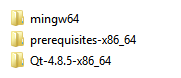
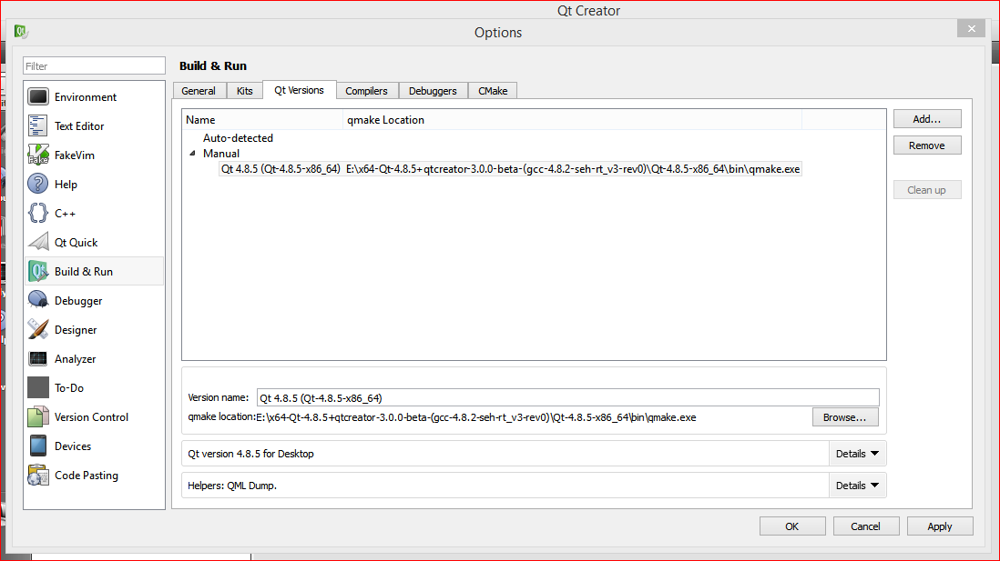
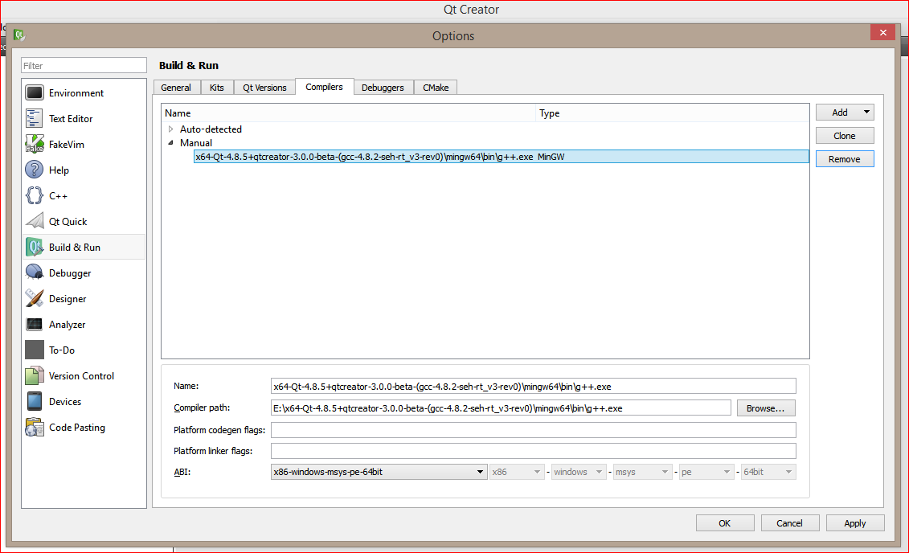
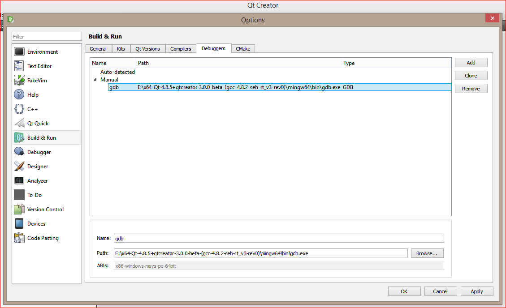
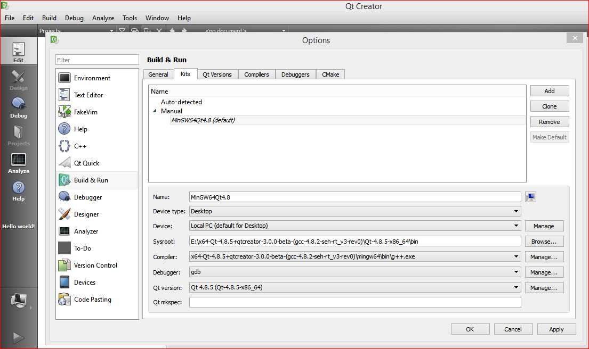

Abstract
I have finally setup Qt development environment on my laptop using the MinGW toolchain.
I downloaded an all encompassing pre-built binary from here
and extracted the archive to my E drive's following folder.
x64-Qt-4.8.5+qtcreator-3.0.0-beta-(gcc-4.8.2-seh-rt_v3-rev0)

Updating the PATH variable
In order for us to launch QtCreator, QtAssistant etc., The following path must be appended to
the system PATH variable.
E:\x64-Qt-4.8.5+qtcreator-3.0.0-beta-(gcc-4.8.2-seh-rt_v3-rev0)\prerequisites-x86_64\bin;
In order for compiled binaries to be run successfully (from outside QtCreator), the following path
must also be appended to the system PATH variable.
E:\x64-Qt-4.8.5+qtcreator-3.0.0-beta-(gcc-4.8.2-seh-rt_v3-rev0)\Qt-4.8.5-x86_64\bin;
QtCreator Kit Setup
Choosing Qt Version

Qt version 4.8.5 for Desktop (Details)
Name: Qt 4.8.5 (Qt-4.8.5-x86_64)
ABI: x86-windows-msys-pe-64bit
Source: E:\x64-Qt-4.8.5+qtcreator-3.0.0-beta-(gcc-4.8.2-seh-rt_v3-rev0)\Qt-4.8.5-x86_64
mkspec: default
qmake: E:\x64-Qt-4.8.5+qtcreator-3.0.0-beta-(gcc-4.8.2-seh-rt_v3-rev0)\Qt-4.8.5-x86_64\bin\qmake.exe
Default: debug
Version: 4.8.5
QMAKE_VERSION 2.01a
QT_HOST_BINS E:\x64-Qt-4.8.5+qtcreator-3.0.0-beta-(gcc-4.8.2-seh-rt_v3-rev0)\Qt-4.8.5-x86_64\bin
QT_HOST_DATA E:\x64-Qt-4.8.5+qtcreator-3.0.0-beta-(gcc-4.8.2-seh-rt_v3-rev0)\Qt-4.8.5-x86_64
QT_HOST_PREFIX E:\x64-Qt-4.8.5+qtcreator-3.0.0-beta-(gcc-4.8.2-seh-rt_v3-rev0)\Qt-4.8.5-x86_64
QT_INSTALL_BINS E:\x64-Qt-4.8.5+qtcreator-3.0.0-beta-(gcc-4.8.2-seh-rt_v3-rev0)\Qt-4.8.5-x86_64\bin
QT_INSTALL_CONFIGURATION E:\x64-Qt-4.8.5+qtcreator-3.0.0-beta-(gcc-4.8.2-seh-rt_v3-rev0)\Qt-4.8.5-x86_64
QT_INSTALL_DATA E:\x64-Qt-4.8.5+qtcreator-3.0.0-beta-(gcc-4.8.2-seh-rt_v3-rev0)\Qt-4.8.5-x86_64
QT_INSTALL_DEMOS E:\x64-Qt-4.8.5+qtcreator-3.0.0-beta-(gcc-4.8.2-seh-rt_v3-rev0)\Qt-4.8.5-x86_64\demos
QT_INSTALL_DOCS E:\x64-Qt-4.8.5+qtcreator-3.0.0-beta-(gcc-4.8.2-seh-rt_v3-rev0)\Qt-4.8.5-x86_64\doc
QT_INSTALL_EXAMPLES E:\x64-Qt-4.8.5+qtcreator-3.0.0-beta-(gcc-4.8.2-seh-rt_v3-rev0)\Qt-4.8.5-x86_64\examples
QT_INSTALL_HEADERS E:\x64-Qt-4.8.5+qtcreator-3.0.0-beta-(gcc-4.8.2-seh-rt_v3-rev0)\Qt-4.8.5-x86_64\include
QT_INSTALL_IMPORTS E:\x64-Qt-4.8.5+qtcreator-3.0.0-beta-(gcc-4.8.2-seh-rt_v3-rev0)\Qt-4.8.5-x86_64\imports
QT_INSTALL_LIBS E:\x64-Qt-4.8.5+qtcreator-3.0.0-beta-(gcc-4.8.2-seh-rt_v3-rev0)\Qt-4.8.5-x86_64\lib
QT_INSTALL_PLUGINS E:\x64-Qt-4.8.5+qtcreator-3.0.0-beta-(gcc-4.8.2-seh-rt_v3-rev0)\Qt-4.8.5-x86_64\plugins
QT_INSTALL_PREFIX E:\x64-Qt-4.8.5+qtcreator-3.0.0-beta-(gcc-4.8.2-seh-rt_v3-rev0)\Qt-4.8.5-x86_64
QT_INSTALL_TRANSLATIONS E:\x64-Qt-4.8.5+qtcreator-3.0.0-beta-(gcc-4.8.2-seh-rt_v3-rev0)\Qt-4.8.5-x86_64\translations
QT_VERSION 4.8.5
Choosing Compiler

Choosing Debugger

Creating the Kit

Links and References
- MinGW and Qt
- MinGW 64 bit